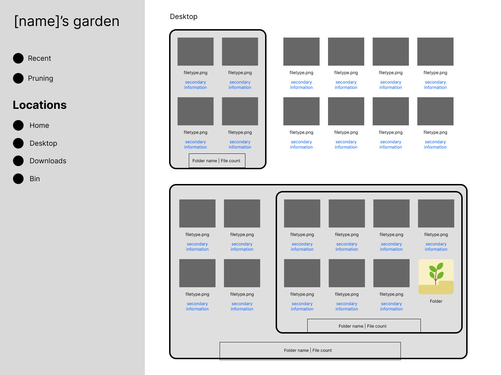
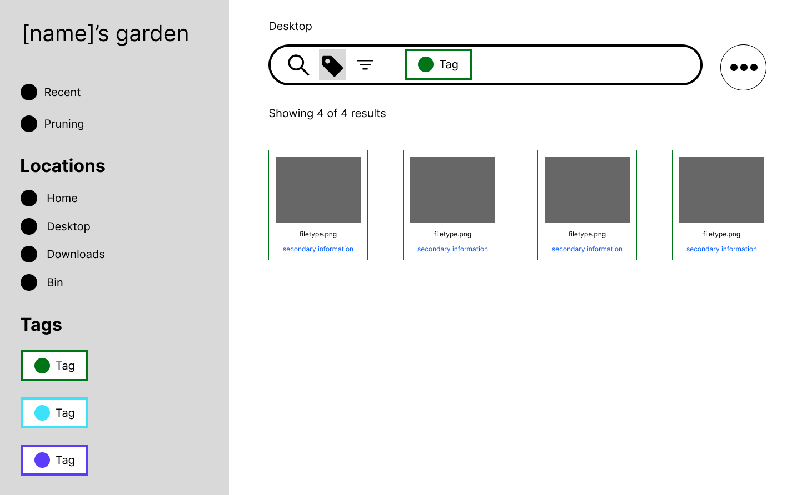
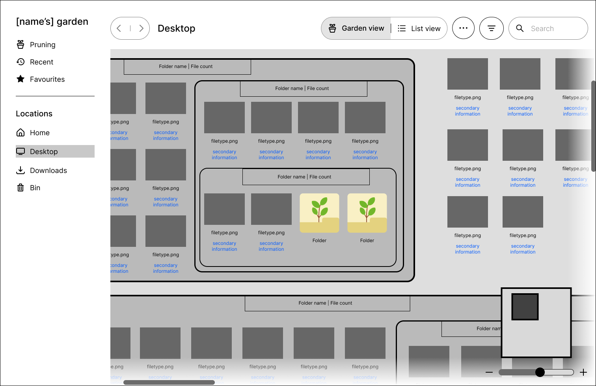
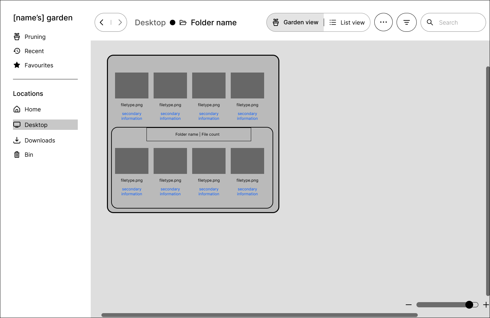
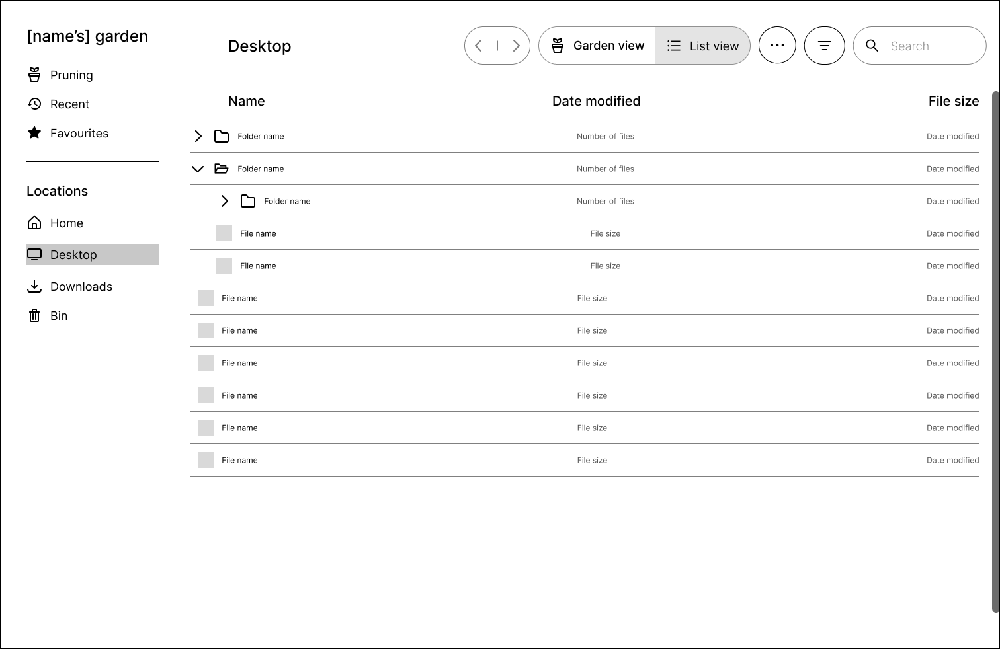
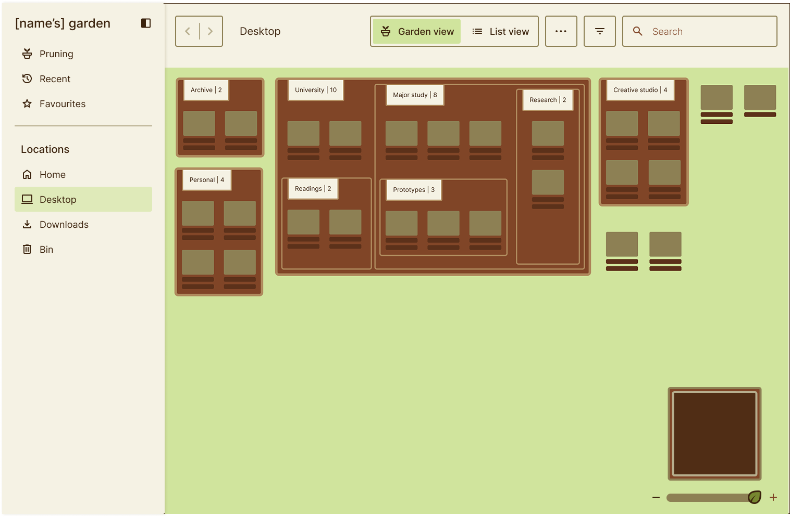
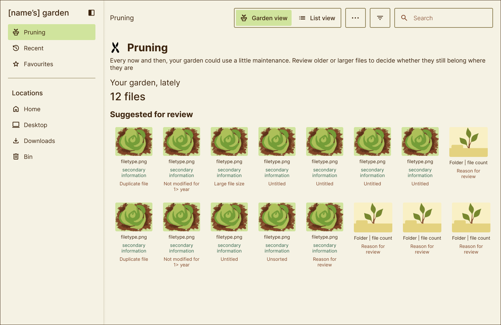
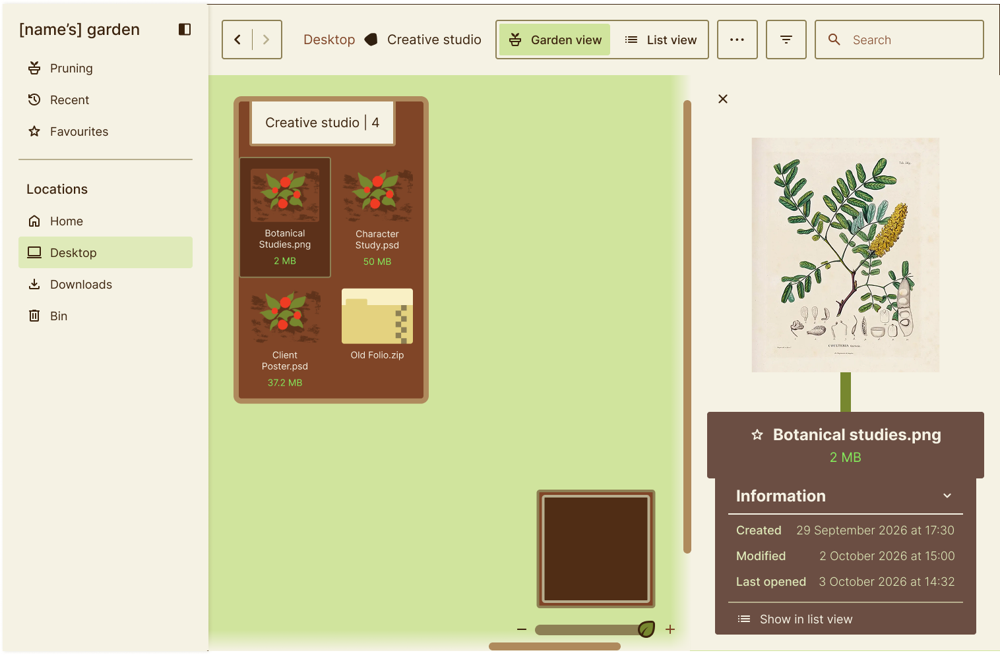
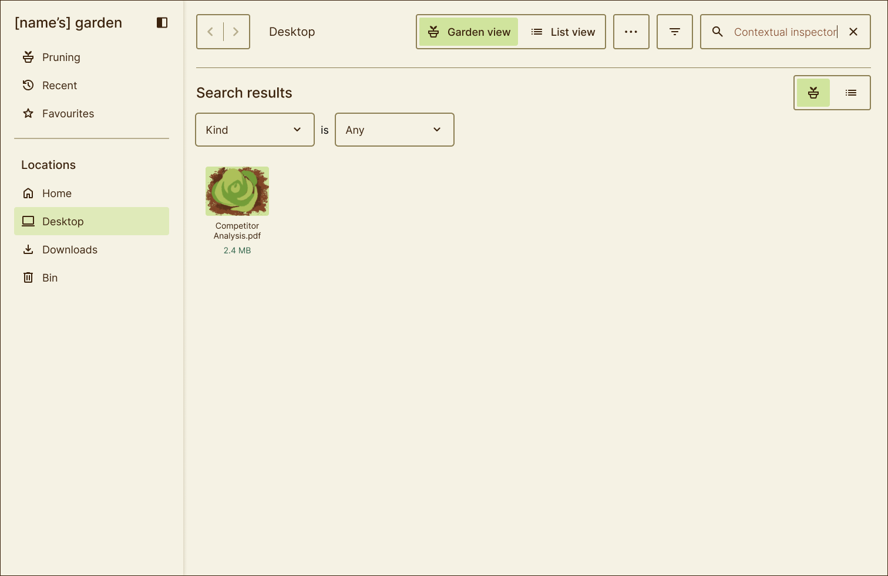

Root
OVERVIEW
This case study explores designing a garden-based visual metaphor and whether it can provide a more intuitive and novel way of organising files.
MY ROLE
UI/UX Design
TEAM
Independent study with an academic supervisor

Garden view

List view
The problem
“Overview first, zoom and filter, then details-on-demand.”
- Ben Schneiderman
Traditional file management systems rely on hierarchical organisation structures to ensure data can be retrieved and managed. However, if the underlying structure is poorly constructed initially or if there is a large dataset, people have difficulty managing them.
Key pain points
-
Difficult to organise and manage large quantities of data
-
Little opportunity for organic discovery
-

Using folders and files can be space inefficient
How might we develop an alternative method to representing data that is space efficient, prompts organic discovery, and makes managing large data sets easier?
The design process
Define
Empathise
Who could benefit?
-
•
Students or researchers
-
•
People managing lots of personal files
-
•
People who don't naturally organise files
-
•
Long-term projects
Personas
Nancy Akram
AGE
20
OCCUPATION
Student
LOCATION
Melbourne
About
Nancy is a 2nd year pharmacy student who is having a hard time organising her files, as it stands her Onedrive is chaotic. She has recently spent an entire day organising things, and wants to make sure it doesn't get out of hand again.
Core needs
-
•
Needs to have incentive to regularly organise and declutter
-
•
Needs to develop a system for organising files
Frustrations
-
•
'Out of sight, out of mind' often forgets files exist making it had to re-find
-
•
Likes aesthetics and having a cute setup, even at the expense of function
Sam Keehan
AGE
27
OCCUPATION
Store manager
LOCATION
Sydney
About
Sam is a local chain store manager overseeing daily affairs and such. While the administration system for the store cannot be changed, Sam likes to do independent research as a hobby in his free time. He can get a little absorbed in the process, so often he has a hard time remembering where he put things.
Core needs
-
•
Have a way to keep track of research progress and keep papers somewhere.
-
•
Rough system that has room for change.
Frustrations
-
•
"They all look the same!" it's hard to tell files apart from each other.
Research
The early scope for this project initially focused on using a garden-based visual metaphor to make a typically visually monotonous experience more novel and intuitive. However, after looking at the underlying theory, I realised the more interesting design problem surrounded file management theory. On top of analysing existing examples such as OneDrive, macOS Finder, and Google Drive, I researched the theoretical principles and accessibility considerations.
Competitor UI analysis
Main findings:
-
•
Multiple views have different strengths.
-
•
There should be multiple ways to access the same features.
-
•
Use icons as visual comprehension aids.
-
•
Searching and sorting are a dominant feature. Users should be able to narrow down their query based on whatever metadata is available to them.
Research insights
Find full insights here.
| Finding | Implication | Opportunity |
|---|---|---|
| Hierarchical file systems are familiar to users. | Users may be less willing to relearn an entirely new navigation system. | Preserve some degree of hierarchy within the metaphor. |
| An information scent is an estimation of how much useful information they are likely to get on a given path. | A stronger information scent provides more context regarding perceived value. | Include visual cues such as file type, hierarchy, icons, previews and labels to provide a stronger information scent. |
| Users have a hard time maintaining file sets, especially as they get larger (meta activity in Personal Infromation Management). | Failure to create a robust management system early on exacerbates the issue as more files accumulate. | Propose a 'pruning' feature, prompting users to periodically organise their files. |
Accessibility accommodations
| Concern | Consideration | Mitigation |
|---|---|---|
| Keyboard navigation integration | Failure to do so means users without a mouse or mouse mobility will have a difficult time navigating. | Every important action has a keyboard equivalent. |
| Color | Given the high variety of colour, it is important to maintain sufficient contrast for legibility. It can also not be the only means of communicating information. | Add an additional cue to distinguish categories such as an icon, pattern, text label, border style. |
| Metaphor confusion | Replacing conventional understanding may cause confusion regarding what features represent. Enjoyment of the metaphor may not be enough to warrant the initial learning curve. | Can include garden terminology in secondary interaction, but underlying core interactions should remain clear and understandable. |
| Screen readers | Files should still have strong underlying semantic HTML and hierarchy rather than purely visual positioning so as to not cause confusion, especially without the visual aid to decipher information. | Use semantic HTML and write as a conventional information structure. The project should remain a functional file management system when stripped of the metaphor. |
| Cognitive load and visual density | Having 200 plants on the screens which may be an issue when dealing with larger data sets can create overwhelm. | Limit display to show 1-2 hierarchies (will need to experiment) to control the amount of information on a screen at once. Additionally, include a minimap. |
Ideate
This phase focused on exploring selection models. I ended up selecting the treemap model and modifying it to prevent cognitive overload. An additional modification was adding an 'isolation mode' to show just the clicked folder.

Treemap model

Tagging model

Modified treemap model

Isolation mode

List dropdown
Design decisions
-
•
Include a list view for accessibility and a different view option.
-
•
Schneiderman view but preserve some hierarchy to avoid cognitive overwhelm.
-
•
Traditional selection behaviour given familiarity.
Prototyping
The high-fidelity prototype interactivity was informed by some testing scenarios and representing any specific behaviour. However, they have limited functionality. Additional notes have been added explaining elements which could not be showcased due to the inherent limitations of a prototype.

High-level overview files

Pruning page

Isolation mode and selected file

Search
Testing
Since the scope of the project was developing a conceptual interaction model, formal usability testing of the final prototype was not conducted. The design direction was informed by secondary research into file management, information organisation, and user behaviour. I had also received informal feedback from industry professionals during the low-fidelity prototyping stage.
However, I did develop testing plans, which can be viewed here.
Next steps
-
•
Conduct usability testing against the proposed interaction model.
-
•
Evaluate performance with larger datasets.
-
•
Refine interactions based on testing.
-
•
- Develop a functional demo showcasing outlined behaviour.
Results and reflection
Results
For this project, I developed and documented a proposed alternative interaction model for file management. I created a high-fidelity prototype for a garden visual metaphor. This is also accompanied by a component library with notes regarding implementation and how to design responsively.
What I learned
Prioritise research
I underestimated the time it would take to conduct research for this project. In future project plans, I will dedicate more time for research in project timelines. A project informed by more research is more robust.
Push designs to their limits
Designs should not only remain functional in the best-case scenario but should also adapt to different content and contexts. For instance, designing for large data sets or very small screen sizes ensures the user experience remains as consistent as possible.
Balance comprehension with visibility
When designing responsively, it is important to evaluate what information should be hidden and what the implication of hiding it would be. Ensuring users are not punished for having a smaller screen size should be a priority when designing.